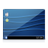
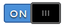
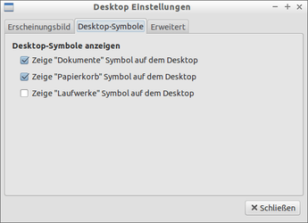

Desktop-Symbole
Zum Verständnis dieses Artikels sind folgende Seiten hilfreich:
 Obwohl Desktop-Symbole (Icons) unter Linux eher selten genutzt werden, sind diese für viele Computer-Benutzer ein unverzichtbares Element des Desktops. Eine gerade bei Umsteigern beliebte Frage ist daher, wie man sich diese Symbole anzeigen lassen kann. Da es unter Linux mehr als eine Desktop-Umgebung gibt, hängt die konkrete Vorgehensweise von der jeweils vorhandenen ab.
Grundlagen¶
Symbole auf dem Desktop anzuzeigen ist unter Linux keine Fähigkeit einer Desktop-Umgebung bzw. des eingesetzten Fenstermanagers, sondern wird meist von den Standard-Dateimanagern (oder in seltenen Fällen auch von speziellen Hilfsprogrammen) übernommen. Zusätzlich ist die Konfiguration häufig mit den Einstellungen der Desktop-Umgebung verzahnt. In der Regel wird ein systemweiter Autostart-Eintrag verwendet, damit sich das jeweilige Programm direkt nach der grafischen Anmeldung um das Zeichnen der Symbole kümmert. Bei folgenden Desktop-Umgebungen kümmert sich ein Dateimanager um das Zeichnen der Symbole:
| Übersicht | ||
| Desktop-Umgebung | Standard-Dateimanager | Startbefehl |
| Unity/GNOME | Nautilus | nautilus -n |
| MATE | Caja | caja -n |
| Xfce | Thunar | thunar --daemon |
| LXDE | PCManFM | pcmanfm -d --desktop |
| Cinnamon | Nemo | nemo -n |
Wie der Tabelle zu entnehmen ist, stellt nur KDE bzw. Kubuntu eine Ausnahme dar. Ist die Grundfunktionalität aber erst einmal gegeben, kann man bei allen Desktop-Umgebungen Programmstarter in Form von .desktop-Dateien einfach in den Ordner ~/Schreibtisch oder ~/Arbeitsfläche (früher auch ~/Desktop) kopieren. Ausführlich erklärt wird das im Abschnitt Allgemein weiter unten.
Desktop-Umgebungen¶
Unity¶
Eigentlich braucht man (pro Benutzer) nur vier Befehle in einem Terminalfenster [1], um die klassischen 4 Symbole zu aktivieren:
gsettings set org.gnome.nautilus.desktop home-icon-visible true gsettings set org.gnome.nautilus.desktop computer-icon-visible true gsettings set org.gnome.nautilus.desktop trash-icon-visible true gsettings set org.gnome.nautilus.desktop network-icon-visible true
Mit dem Parameter von false am Zeilenende macht man das Ganze wieder rückgängig. Falls sich die Optik nicht sofort ändert, meldet man sich ab und wieder neu an. Da die Kommandozeile häufig als unfreundlich empfunden wird, noch ein paar Vorschläge für grafische Lösungen:
Arronax - eigene Programmstarter erstellen
Unsettings - Konfigurationsprogramm für Unity (ab Ubuntu 12.04)
GNOME¶
Mithilfe des Gnome Tweak Tool können die Desktop-Symbole bequem eingeschaltet werden. Dafür genügt es im Reiter "Arbeitsoberfläche" den Kippschalter beim Punkt "Symbole auf Arbeitsfläche" auf  zu stellen.
MATE¶
Mithilfe des Programms MATE Tweak, zu erreichen über "System -> Einstellungen", können die Desktop-Symbole bequem ein- oder ausgeschaltet werden.
KDE¶
Wenn nach einem Rechtsklick  auf die Arbeitsfläche der unterste Menüpunkt "Einstellungen für Ordner-Ansicht" lautet, wird bereits die gesamte Arbeitsfläche für Desktop-Symbole genutzt. Es können aber noch erweiterte Einstellungen vorgenommen werden.
auf die Arbeitsfläche der unterste Menüpunkt "Einstellungen für Ordner-Ansicht" lautet, wird bereits die gesamte Arbeitsfläche für Desktop-Symbole genutzt. Es können aber noch erweiterte Einstellungen vorgenommen werden.
Nur einen begrenzten Bereich für Desktop-Symbole nutzen¶
Nach einem Rechtsklick auf die Arbeitsfläche wählt man den Menüpunkt "Miniprogramme entsperren", wenn sie nicht bereits entsperrt sind. Nach einem weiteren Rechtsklick auf die Arbeitsfläche wählt man nun "Miniprogramme hinzufügen ...", sucht in dem erscheinenden Katalog das Miniprogramm "Ordner-Ansicht" und zieht es mit gedrückter linker Maustaste auf die Arbeitsfläche. Es können nun noch erweiterte Einstellungen vorgenommen werden.
Erweiterte Einstellungen¶
Standardmäßig werden alle Dateien im Verzeichnis ~/Schreibtisch oder ~/Arbeitsfläche angezeigt. Um stattdessen Dateien aus einem anderen Ordner anzuzeigen, klickt man je nachdem, ob man die gesamte Arbeitsfläche oder das Miniprogramm Ordner-Ansicht benutzt, entweder rechts auf die Arbeitsfläche oder auf das Miniprogramm und wählt den Menüpunkt "Einstellungen für 'Ordner-Ansicht'". Im daraufhin erscheinenden Dialog wählt man links die Kategorie "Ort" und wählt nun den gewünschten Ordner.
Die Kategorien "Ansicht" und "Filter" bieten Möglichkeiten an, das Aussehen der Ordner-Ansicht zu verändern bzw. nur bestimmte Dateien im gewählten Ordner anzuzeigen.
Xfce¶
Über einen Rechtsklick auf den Desktop oder den Einstellungsmanager gelangt man zum Punkt "Schreibtischeinstellungen". Auf der Registerkarte "Symbole" lassen sich vier Standardsymbole aktivieren bzw. deaktivieren:
Persönlicher Ordner
Dateisystem
Papierkorb
Entfernbare Datenträger
|  |
| LXDE - Desktop-Symbole |
Benötigt man weitere Symbole, geht man wie im Abschnitt Allgemein beschrieben vor.
LXDE¶
LXDE enthält traditionell weder Symbole auf dem Desktop noch grafische Werkzeuge, um diese zu konfigurieren. Grundlage ist hier eine im Hintergrund laufende Instanz von PCManFM, die zumindest den Einsatz eigener Programmstarter ermöglicht. Diese Situation hat sich erst mit der Version 1.0 von PCManFM bzw. ab Lubuntu 12.10 geändert, der nun Funktionen zur Anzeige von Standard-Symbolen besitzt. Versionsunabhängig ist die Anleitung im nächsten Abschnitt.
Allgemein¶
Um Programmstarter auf der Arbeitsfläche zu erstellen, werden .desktop-Dateien verwendet. Weitere Informationen zum Aufbau dieser Dateien enthält der Artikel Programmstarter. Statt neue anzulegen, kann man auch bereits vorhandene Dateien aus dem Ordner /usr/share/applications/ in den eigenen Desktop-Ordner kopieren (und bei Bedarf anpassen).
Nun einige Beispiele, um die klassischen Windows-Symbole nachzubilden. Statt DATEIMANAGER setzt man den jeweils bevorzugten ein, also:
Die verwendeten Dateinamen orientieren sich an englischen Windows-Versionen und können auf Wunsch abgeändert werden. Relevant ist nicht der Dateiname, sondern der Inhalt (konkret die Zeile Name[de]=...).
Eigene Dateien¶
Um das Homeverzeichnis aufzurufen, im Desktop-Ordner die Datei home.desktop mit folgendem Inhalt erstellen [3]. BENUTZERNAME bitte auch anpassen:
[Desktop Entry] Type=Application Icon=go-home Name=Home Folder Name[de]=Eigene Dateien Comment=open home folder Categories=FileManager;Utility;Core;GTK; Exec=DATEIMANAGER /home/BENUTZERNAME StartupNotify=true Terminal=false MimeType=x-directory/normal;inode/directory;
Papierkorb¶
Um eine Verknüpfung zum Mülleimer auf den Desktop zu bekommen, analog die Datei trash.desktop anlegen:
[Desktop Entry] Type=Application Icon=user-trash Name=Trash Name[de]=Papierkorb Comment=open trash Categories=FileManager;Utility;Core;GTK; Exec=DATEIMANAGER trash:/// StartupNotify=true Terminal=false MimeType=x-directory/normal;inode/directory;
Von Nachteil ist, dass sich der Papierkorb hier nicht wie gewohnt über das Kontextmenü ausleeren lässt.
Arbeitsplatz¶
Dieses Desktop-Symbol ist am schwierigsten nachzubilden, was prinzipbedingt ist: Linux verwendet keine Laufwerksbuchstaben, sondern eine Verzeichnisstruktur. Glücklicherweise haben die Entwickler von GVFS einen entsprechenden Workaround vorgesehen. Ein Beispiel, dass man als computer.desktop speichern kann:
[Desktop Entry] Type=Application Icon=user-desktop Name=Computer Name[de]=Arbeitsplatz Comment=Externe Datenträger Categories=FileManager;Utility;Core;GTK; Exec=DATEIMANAGER computer:/// StartupNotify=true Terminal=false MimeType=x-directory/normal;inode/directory;
Netzwerkumgebung¶
Ein Beispiel für die Datei network.desktop. Voraussetzung ist, dass der Dateimanager GVFS nutzt (oder im Falle von KDE eine identische Funktionalität bietet):
[Desktop Entry] Type=Application Icon=network-idle Name=Network Name[de]=Netzwerkumgebung Comment=open network via GVFS Categories=FileManager;Utility;Core;GTK; Exec=DATEIMANAGER network:/// StartupNotify=true Terminal=false MimeType=x-directory/normal;inode/directory;
Sonstige¶
Bei alleinstehenden Fenstermanagern fehlen generell Symbole auf dem Desktop. Wenn man diese Funktion nicht einem der oben genannten Dateimanager überlassen möchte (dazu muss eine Instanz bereits beim Start der grafischen Oberfläche geladen werden), helfen folgende Hilfsprogramme weiter.
Idesk¶
Mit idesk können Desktop-Symbole angelegt und per Tastenkürzel oder Mausklick ausgeführt werden. Dazu installiert [1] man zuerst das folgende Paket:
idesk (universe)
 mit apturl
mit apturl
Paketliste zum Kopieren:
sudo apt-get install idesk
sudo aptitude install idesk
Icons können hinzugefügt werden, indem im Ordner ~/.idesktop/ neue .lnk-Dateien angelegt werden. Die Syntax kann der bei der Installation angelegten Datei entnommen werden. Weitere Optionen wie Schriftart und -größe können in der Datei ~/.ideskrc festgelegt werden. Eine vollständige Erklärung aller Optionen ist im Ordner /usr/share/idesk/ zu finden.
Backstep¶
Auch Backstep kann direkt aus den Paketquellen installiert werden:
backstep (universe)
mit apturl
Paketliste zum Kopieren:
sudo apt-get install backstep
sudo aptitude install backstep
Erfolgreich getestet wurde das Programm mit Metacity (GNOME 2) und xfwm4 (Xfce). Fluxbox wird nicht unterstützt.
Problembehebung¶
Programmstarter müssen ausführbar sein¶
Manche Desktop-Umgebungen wie GNOME oder Xfce erfordern inzwischen, dass .desktop-Dateien ausführbar sein müssen. Zu dieser Problematik siehe auch Programmstarter ausführbar machen.
Programmstartanzeige¶
Je nach Desktop-Umgebung (z.B. Xfce) kann es passieren, dass die Programmstartanzeige ("Sanduhr") bei Desktop-Symbolen nicht funktioniert. Eine Lösung ist nicht bekannt.
 Programmübersicht
Programmübersicht- Erstellt mit Inyoka
-
 2004 – 2017 ubuntuusers.de • Einige Rechte vorbehalten
2004 – 2017 ubuntuusers.de • Einige Rechte vorbehalten
Lizenz • Kontakt • Datenschutz • Impressum • Serverstatus -
Serverhousing gespendet von